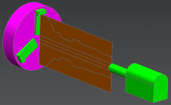

Create a tool with a round insert
-
Open mnf16_85_tools_mfg_3.

-
On the Insert toolbar, click Create Tool
 .
.
The Create Tool dialog box is displayed.
-
In the Type group, from the list, select turning.
-
In the Tool Subtype group, click OD_80_L
 .
.
-
In the Location group, from the Tool list, select FACE1 as your pocket.
The tool number is inherited from the pocket ID number, but you might want to name your tool.
-
In the Name group, in the box, type round_.250.
-
Click Apply.
The Turning Tool-Standard dialog box is displayed.